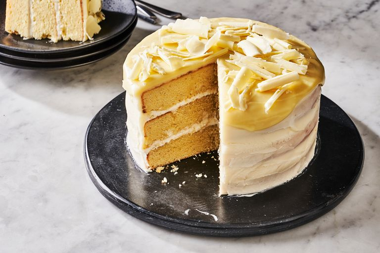

White Chocolate Cake
A classic chocolate cake is always a good idea, but if you are looking to stun with something a little different give this white chocolate cake a try. It's soft and layered with a white chocolate mousse and then frosted with a simple cream cheese frosting. We recommend using good quality bars of white chocolate with this cake as it will really make a difference. Chips won't melt as easily and are more likely to seize on you when trying to melt them down or will leave lumps in your ganache. The bars will also give your cake an even richer, creamier chocolate flavor as well. It's also important to make sure the melted chocolate has a chance to cool down before using in the batter or in the mousse or you risk breaking your mixtures! Ingredients that are the same temperature will always mix together better.
Ingredients
- 3 cups cake flour, (not self-rising)
- 2 teaspoons baking powder
- 1 teaspoon salt
- 1 1/2 cups (3 sticks) unsalted butter, room temperature
- 2 1/4 cups sugar
- 1/2 teaspoon pure vanilla extract
- 1 cup milk
- 8 large egg whites
- Seven-Minute Frosting
- 1 cup Lemon Curd for White Cake
Directions
- Preheat oven to 350 degrees. Butter two 9-by-2-inch round cake pans; line bottoms with parchment paper rounds. Butter parchment, and dust with flour, tapping out excess; set aside.
- Into a medium bowl, sift together flour, baking powder, and salt; set aside. In the bowl of an electric mixer fitted with the paddle attachment, beat butter and 2 cups sugar until light and fluffy, 3 to 4 minutes, scraping down sides of bowl as needed. Beat in vanilla. With mixer on low speed, add flour mixture in three parts, alternating with milk and beginning and ending with flour; beat until just combined. Transfer mixture to a large bowl; set aside.
- In the clean bowl of an electric mixer fitted with the whisk attachment, beat egg whites on low speed until foamy. With mixer running, gradually add remaining 1/4 cup sugar; beat on high speed until stiff, glossy peaks form, about 4 minutes. Do not overbeat. Gently fold a third of the egg-white mixture into the butter-flour mixture until combined. Gently fold in remaining whites.
- Divide batter evenly between prepared pans, smoothing with an offset spatula. Bake, rotating pans halfway through, until cakes are golden brown and a cake tester inserted in centers comes out clean, 30 to 35 minutes. Transfer pans to a wire rack to cool 20 minutes. Invert cakes onto rack; peel off parchment. Reinvert cakes, and let them cool completely, top sides up.
- Using a serrated knife, trim tops of cake layers to make level. Place one layer on a serving plate, cut side up. Using a pastry bag fitted with a coupler, pipe frosting around the perimeter. This dam will prevent the lemon curd filling from seeping out. Fill cake with lemon curd. Place other cake layer on top, cut side down. Spread entire cake with frosting, swirling to cover.
Return to top
Return to main page